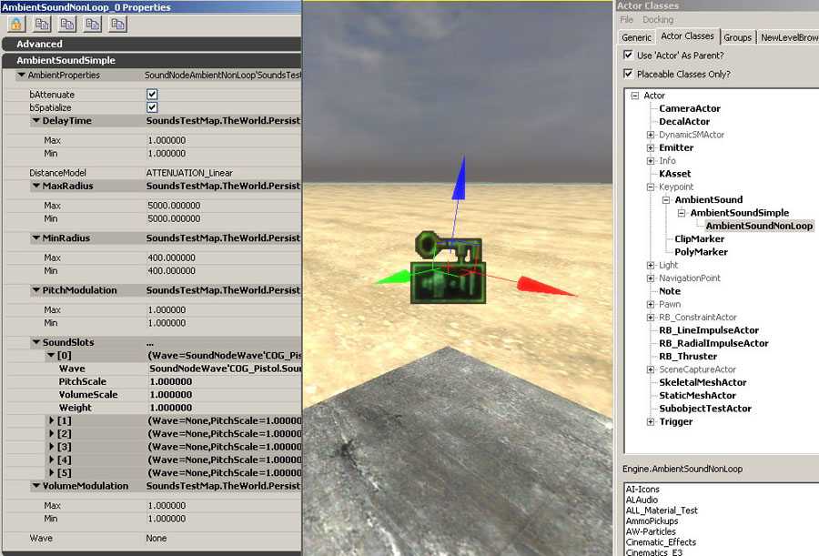
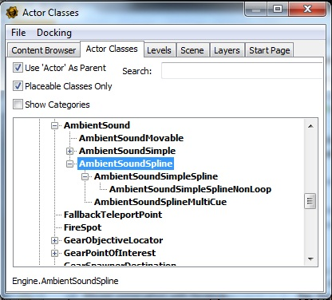
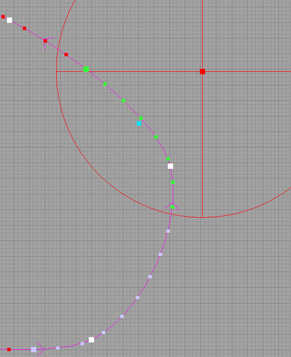
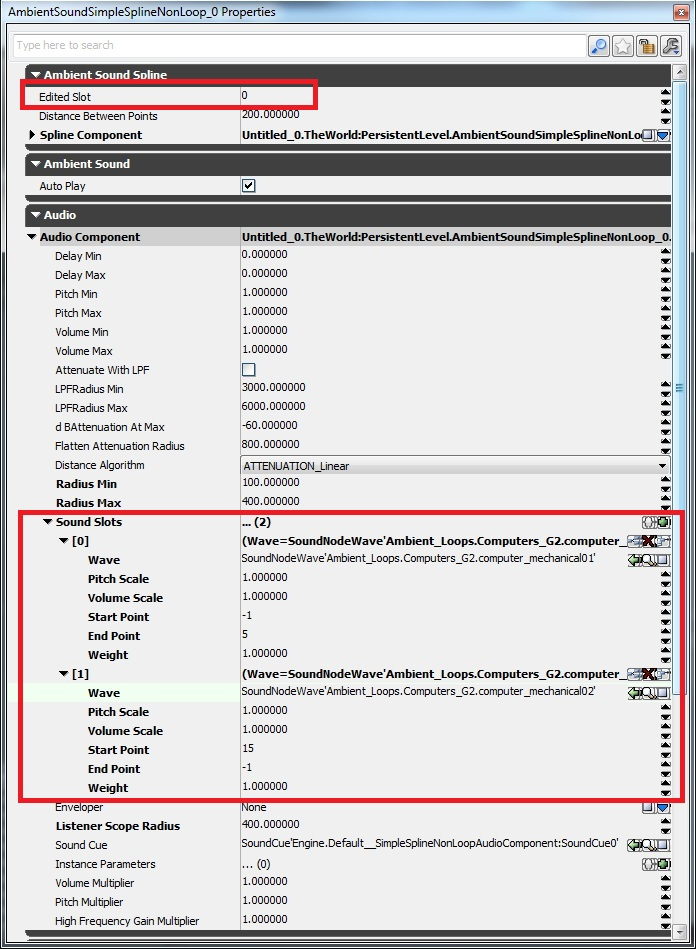
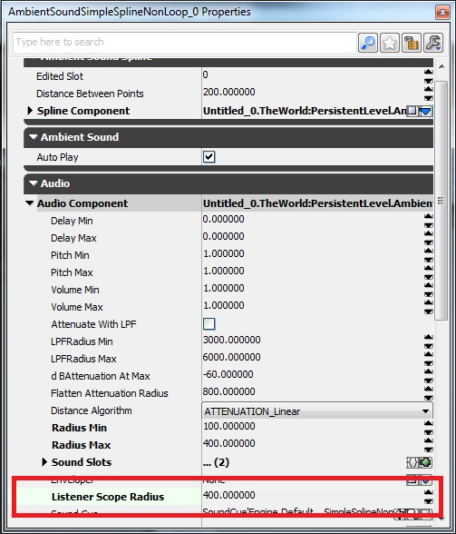
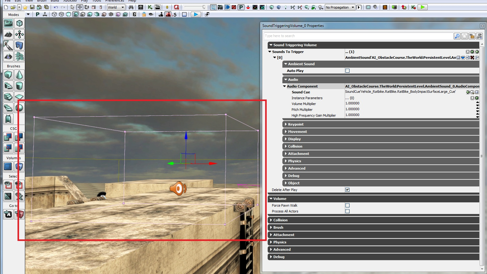
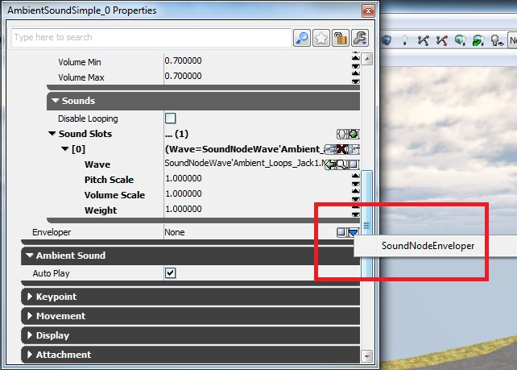

UDN
Search public documentation:
UsingSoundActorsKR
English Translation
日本語訳
中国翻译
Interested in the Unreal Engine?
Visit the Unreal Technology site.
Looking for jobs and company info?
Check out the Epic games site.
Questions about support via UDN?
Contact the UDN Staff
日本語訳
中国翻译
Interested in the Unreal Engine?
Visit the Unreal Technology site.
Looking for jobs and company info?
Check out the Epic games site.
Questions about support via UDN?
Contact the UDN Staff
사운드 액터
개요
AmbientSound 액터
 이 액터는 대게 앰비언트 반복 사운드를 트리거하는데 사용되지만 비반복 사운드도 트리거할 수 있습니다. 듣는 사람이 SoundCue Editor 에서 정의한 반경에 들어서면 액터가 한 번 트리거됩니다. 반복 노드가 쓰인 경우, 그 반경 안에서 소리를 반복 재생하고, SoundCue 에 정의된 모든 프로퍼티를 따릅니다. 반복 노드가 쓰이지 않은 경우, 듣는 사람이 반경에 들어서면 오디오 파일은 한 번만 트리거됩니다.
이 액터는 대게 앰비언트 반복 사운드를 트리거하는데 사용되지만 비반복 사운드도 트리거할 수 있습니다. 듣는 사람이 SoundCue Editor 에서 정의한 반경에 들어서면 액터가 한 번 트리거됩니다. 반복 노드가 쓰인 경우, 그 반경 안에서 소리를 반복 재생하고, SoundCue 에 정의된 모든 프로퍼티를 따릅니다. 반복 노드가 쓰이지 않은 경우, 듣는 사람이 반경에 들어서면 오디오 파일은 한 번만 트리거됩니다.
 이 액터에서 제어 가능한 파라미터는 피치(pitch)와 볼륨(volume)뿐입니다. 반경은 반드시 SoundCue 에서 정의되므로, 에디터에서 도식적으로 표시되지 않습니다. 복잡한 사운드를 만드는 데 있어 반경 제어\가시성보다는 SoundCue 에디터의 유연성을 사용하는 것이 더 바람직할 경우 이 액터를 사용합니다. 다른 반경 설정을 사용하여 여러 위치에서 동일한 Cue 를 트리거하고 싶은 경우, 각 인스턴스에 대해 Cue 를 복제해야 합니다.
이 액터에서 제어 가능한 파라미터는 피치(pitch)와 볼륨(volume)뿐입니다. 반경은 반드시 SoundCue 에서 정의되므로, 에디터에서 도식적으로 표시되지 않습니다. 복잡한 사운드를 만드는 데 있어 반경 제어\가시성보다는 SoundCue 에디터의 유연성을 사용하는 것이 더 바람직할 경우 이 액터를 사용합니다. 다른 반경 설정을 사용하여 여러 위치에서 동일한 Cue 를 트리거하고 싶은 경우, 각 인스턴스에 대해 Cue 를 복제해야 합니다.
AmbientSoundSimple 액터
 이 액터에서는 액터별로 Attenuation(감쇠), Spatialization(공간), Radii(반경), Modulation(변조) 제어를 할 수 있습니다. 상대적 볼륨과 피치 조절은 Volume Modulation(볼륨 변조) 및 Pitch Modulation(피치 변조)를 통해 이루어집니다. 최소\최대 반경은 에디터에 구체 그래픽으로 표시되며, 빨/녹/파 화살표를 잡아끌어 실시간으로 조절할 수 있습니다.
이 액터에서는 액터별로 Attenuation(감쇠), Spatialization(공간), Radii(반경), Modulation(변조) 제어를 할 수 있습니다. 상대적 볼륨과 피치 조절은 Volume Modulation(볼륨 변조) 및 Pitch Modulation(피치 변조)를 통해 이루어집니다. 최소\최대 반경은 에디터에 구체 그래픽으로 표시되며, 빨/녹/파 화살표를 잡아끌어 실시간으로 조절할 수 있습니다.
AmbientSoundNonLoop 액터

- Delay Time(지연 시간)은 트리거되는 사운드 사이의 묵음(silence) 최소 최대치를 초 단위로 조절합니다. 오디오 파일이 트리거될 때마다 지정된 범위내에서의 지연 시간을 무작위로 선택합니다.
- 전반적인 액터 볼륨 + 피치는 Volume Modulation + Pitch Modulation 으로 정의합니다.
- SoundSlots 탭의 오른쪽에 위치한 작은 녹색 아이콘을 클릭하면 각 Wav 파일에 대한 사운드 슬롯(Sound Slots)이 추가됩니다. 각 사운드 슬롯별로 볼륨, 피치, 웨이트(weight, 가중치), 프로퍼티의 기능이 있습니다. 웨이트는 해당 사운드 슬롯이 액터에 있는 다른 사운드 슬롯에 비해 상대적으로 트리거될 확률을 제어합니다.
- 액터 창의 하단에 위치한 'Wave' 슬롯은 무시해 주시고, 사용하지 말아 주시기 바랍니다.
- 최소\최대 반경은 에디터에서 구체 그래픽으로 표시되며, 빨/녹/파 화살표를 잡아 끌어 실시간 조절할 수 있습니다.
 맵의 모든 AmbientSoundSimple + AmbientSoundNonLoop 액터가 선택되었습니다.
맵의 모든 AmbientSoundSimple + AmbientSoundNonLoop 액터가 선택되었습니다.
AmbientSoundSpline 액터
- 콘텐츠 브라우저를 열고, 액터 클래스 탭을 선택한 다음, Keypoint -> AmbientSoundSpline 을 펼칩니다.

- 원하는 것을 (Simple, NonLoop, MultiCue 중에서) 선택한 다음 게임 월드에 끌어 놓습니다.
- 소리의 이동 경로에 따라 커브를 그립니다. 뷰포트의 탑 뷰로 작업하는 것이 아마 가장 좋을 것입니다. 그런 다음 액터 아이콘 중심의 하양 사각형에 좌클릭합니다. 좌클릭 와중에 마침표 키를 누르고 마우스를 움직이면 새 점이 추가됩니다.
- 스플라인 위에 남는 점을 지우고 싶은 경우, BACKSPACE 키를 눌러야 합니다. 마지막 점에서부터 첫째 점 순서로만 가능합니다.
- 스플라인 모양을 바꾸고자 하는 경우, 하양 사각형 중 하나를 잡은 다음 적합한 위치로 옮겨 주기만 하면 됩니다.

스플라인 위의 점 중:- 파랑 점은 가상 스피커 위치를 나타냅니다.
- 하양 점은 스플라인 커브 콘트롤 지점입니다.
- 연보라 점은 사운드 범위가 정의된 점입니다.
- 녹색 점은 청자 영역 내의 점입니다.
- 빨강 원은 청자가 들을 수 있는 영역을 나타냅니다. 빨강 점은 청자의 위치를 나타냅니다 (끌기 가능).
- AmbientSoundSplineSimple - 일반 AmbientSoundSimple 프로퍼티를 갖습니다.
- AmbientSoundSimpleSplineNonLoop - 일반 AmbientSoundNonLoop 프로퍼티를 갖습니다.
- AmbientSoundSplineMultiCue - 일반 AmbientSound 프로퍼티를 갖습니다.
 아래는 각각의 스플라인 액터 유형에서 찾을 수 있는 프로퍼티에 대한 설명입니다.
아래는 각각의 스플라인 액터 유형에서 찾을 수 있는 프로퍼티에 대한 설명입니다.
- Edited Slot - 편집 슬롯 - 스플라인 위에 현재 수정된 사운드 슬롯을 표시합니다.
- Spline Component 스플라인 컴포넌트 - Ambient Sound Spline -> Spline Component -> Spline Info -> Points 를 선택하여 커브 유형을 바꿀 수 있습니다.
- Sound Slots -> Start Point 사운드 슬롯 -> 시작점 - 사운드가 카메라를 따라가기 시작하는 점을 스플라인 위에 놓습니다. -1 = 스플라인 위의 첫 점입니다.
- Sound Slots -> End Point 사운드 슬롯 -> 끝점 - 사운드가 카메라를 그만 따라다니는 점을 스플라인 위에 놓습니다. -1 = 스플라인 위의 마지막 점입니다.

Listener Scope Radius 청자 영역 반경 - 스플라인 위에서 사운드를 들을 수 있는 반경을 표시합니다. RadiusMax 보다 작을 수는 없습니다. 시각적으로도 표시됩니다. Spline Sound Actor 를 만들 때는 보통 영역 내 어딘가 중심에 빨강 사각 점이 있는 큰 빨강 원이 보입니다. 카메라의 가청 범위를 나타내며, 마우스를 사용해서 움직일 수 있습니다. 파랑 점도 있는데, 카메라에 들리는 가상 사운드 소스를 나타냅니다. 실제 소리가 나는 곳이 여기입니다. 빨강 원에 충분히 가까이 접근할 때 현재 편집 슬롯 위를 움직이는 녹색 점이 카메라의 가청 범위를 나타냅니다.
ReverbVolume
SoundTriggeringVolume
- 브러시 빌더를 사용하여 볼륨을 만듭니다. 그 다음 볼륨 선택 부분에 우클릭하여 SoundTriggeringVolume 을 선택해 주세요.
- 그 다음 F4 키를 누르고 (프로퍼티에서) SoundTriggeringVolume 을 선택한 상태로 자물쇠 버튼을 누릅니다.
- (뷰포트나 씬 매니저에서) 트리거시키고자 하는 액터를 선택한 다음 "콘텐츠 브라우저에 선택된 오브젝트 사용" (녹색 화살표 버튼)을 누릅니다.
- 그러면 SoundTriggeringVolume 에 씬 액터가 추가됩니다.
- 들어서면 연결된 모든 SoundActor 가 재생됩니다.
- 재생 이후 이 SoundActor 는 (반복되지 않는 이상) 가비지 콜렉터로 옮겨집니다. 어떤 이유든 이 액터를 메모리에 남겨놔야 겠다면, 액터 프로퍼티의 'Delete After Play' 옵션 체크를 해제해 주시기 바랍니다.

사운드 액터 프로퍼티
Enveloper
- 선택된 SoundActor 를 게임 월드에 삽입합니다.
- 프로퍼티 창을 엽니다.
- Enveloper 슬롯에서 'Create New Object' 를 선택합니다.

- Looping, Envelope, Modulation 의 세 가지 프로퍼티가 있는 Enveloper 모듈이 만들어집니다.
 Enveloper 프로퍼티는:
Looping, 반복입니다.
Enveloper 프로퍼티는:
Looping, 반복입니다.
- Loop Start - 루프의 Envelop 시작 지점입니다.
- Loop End - 루프의 Envelop 끝 지점입니다.
- Duration After Loop - 반복이 끝난 이후의 페이드 아웃 시간입니다.
- Loop Count - 반복 횟수입니다.
- Loop Indefinately - 무한 루프 예/아뇨 스위치입니다.
- Loop - 루프 예/아뇨 스위치입니다. (Loop Count 스위치와 함께 작동합니다)
 Envelope, 감싸개입니다. 오른편 녹색 차트 모양을 클릭하면 그래픽 인터페이스가 뜹니다.
Envelope, 감싸개입니다. 오른편 녹색 차트 모양을 클릭하면 그래픽 인터페이스가 뜹니다.
- Volume Interp Curve - 볼륨 인벨롭을 정의합니다. 'Points' 가 보일 때까지 구조체를 확장합니다. InVal = 초 단위 시간, OutVal = 볼륨 곱수, InterpMode = 커브 유형
- PitchInterpCurve - 피치 인벨롭을 정의합니다. 'Points' 가 보일 때까지 구조체를 확장합니다. InVal = 초 단위 시간, OutVal = 피치 곱수, InterpMode = 커브 유형
- PanLeftRightInterCurve - 패닝 인벨롭을 정의합니다. 'Points' 가 보일 때까지 구조체를 확장합니다. InVal = 초 단위 시간, OutVal = 패닝 곱수 (1 = 100% 왼쪽, 0 = 중앙, -1 = 100% 오른쪽. 모노 사운드에만 작동하며, 액터의 'Spatialize' 플랙은 꺼야 합니다), InterpMode = 커브 유형입니다.
- PanFrontBackInterCurve - 패닝 인벨롭을 정의합니다. 'Points' 가 보일 때까지 구조체를 확장합니다. InVal_= 초 단위 시간, _OutVal = 패닝 곱수 (1 = 100% 앞, 0 = 중앙, -1 = 100% 뒤. 모노 사운드에만 작동하며, 액터의 'Spatialize' 플랙은 꺼야 합니다), InterpMode = 커브 유형
 Modulation, 변조입니다. 인벨롭에 정의된 모든 점에 걸쳐 미리 정의된 값을 난수화시킵니다.
Modulation, 변조입니다. 인벨롭에 정의된 모든 점에 걸쳐 미리 정의된 값을 난수화시킵니다.
- PitchMin - 재생되는 피치 최소값입니다.
- PitchMax - 재생되는 피치 최대값입니다.
- VolumeMin - 재생되는 볼륨 최소값입니다.
- VolumeMax - 재생되는 볼륨 최대값입니다.

OmniRadius (Flatten Attenuation Radius)
 AmbientSoundSpline 액터와 함께 사용하면, Flatten Attenuation Radius (고른 감쇠 반경)이라 불립니다.
AmbientSoundSpline 액터와 함께 사용하면, Flatten Attenuation Radius (고른 감쇠 반경)이라 불립니다.